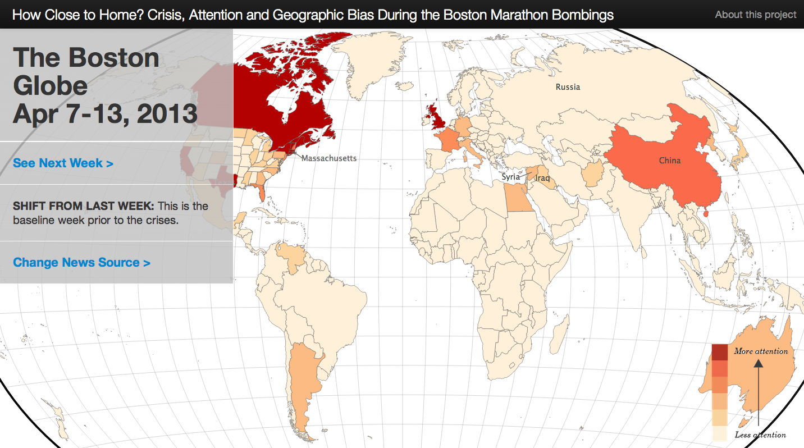
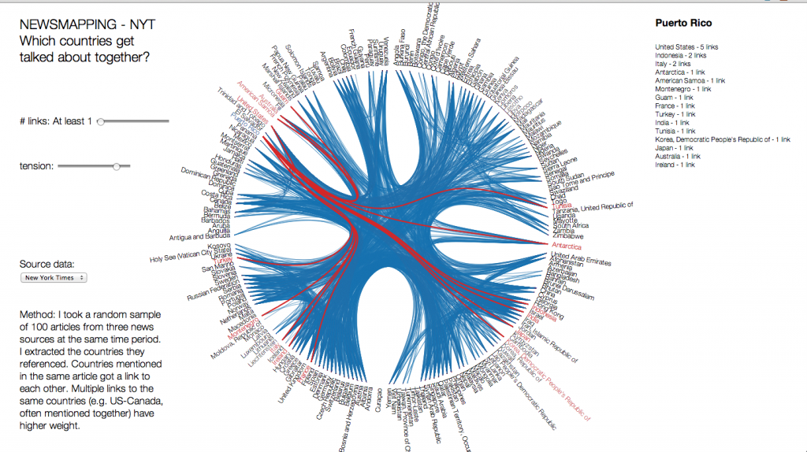
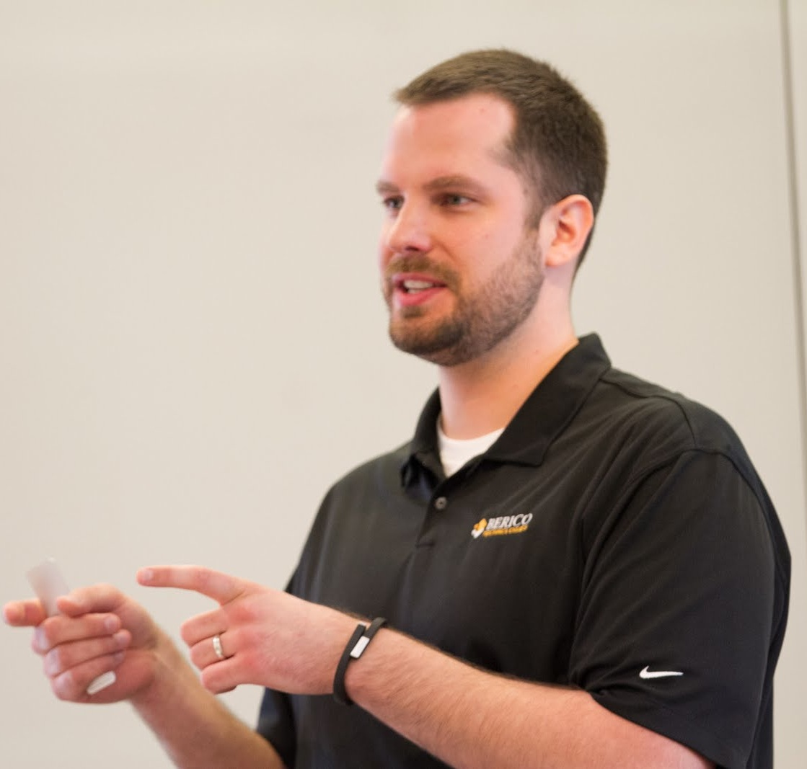

CLAVIN (Cartographic Location And Vicinity INdexer) is an award-winning open source software package for document geotagging and geoparsing that employs context-based geographic entity resolution.
It extracts location names from unstructured text and resolves them against a gazetteer to produce data-rich geographic entities.
CLAVIN does not simply "look up" location names – it uses intelligent heuristics to identify exactly which "Springfield" (for example) was intended by the author, based on the context of the document. CLAVIN also employs fuzzy search to handle incorrectly-spelled location names, and it recognizes alternative names (e.g., "Ivory Coast" and "Côte d'Ivoire") as referring to the same geographic entity.
By enriching text documents with structured geo data, CLAVIN enables hierarchical geospatial search and advanced geospatial analytics on unstructured data.
Charlie will be giving a streaming tech talk on CLAVIN for the Eclipse Foundation's LocationTech Working Group at 11:00am EDT on June 18, 2013. The talk will be broadcast live via Google Hangout and subsequently uploaded to YouTube for later viewing & sharing.
Check out a preview of the presentation slides and download the PDF summary: CLAVIN - Capabilities Overview.
We were thrilled that the Washington Post printed a half-page story on CLAVIN in a recent issue of the newspaper. It seems CLAVIN has gone from analyzing the content of news articles to being the content of a news article. The story is available online here: Clavin seeks to make its mark in open-source world and also in the June 3, 2013 print edition on page A14.
In their latest investigation, Catherine D'Ignazio and researchers from the MIT Center for Civic Media turned their attention to media coverage of the Boston Marathon bombings. In this study, they looked at three weeks of news coverage from four different sources to see which media outlets paid attention to which crises in the weeks surrounding the attacks. Using CLAVIN, they were "able to yield up to 90% correct placement of news articles at the country level." The write-up is here: How Close to Home? Crisis, Attention and Geographic Bias along with an interactive visualization.
CLAVIN was recently featured in a pair of blog posts by Google Maps Mania and Directions Magazine's All Points Blog. Thanks for the mentions, and thanks especially to the anonymous commenter who "received perfect results" from our "great demo!"
Many thanks to Pete Warden for mentioning CLAVIN on his personal blog PeteSearch. Pete said CLAVIN is "very promising" and has "some very neat tricks up its sleeve." Thanks, Pete!
Be sure to try out Pete's Data Science Toolkit, a collection of open data sets and open source tools for data science:

We'd like to thank everyone who came out for Charlie's talk on CLAVIN ("Automatically Geotagging Unstructured Text with Open Source Tools") at the 2013 FOSS4G North America Conference in Minneapolis on May 23, 2013! The turnout was fantastic and we really appreciated all the great questions! Slides from the talk can be viewed here.
On May 21, 2013 Charlie gave a talk on CLAVIN at the Location Intelligence conference in DC during the "Open Source Technology Use Cases" session. View the slides here. Video will be posted soon.

Charlie gave a short talk about CLAVIN and Berico Technologies at the Destination Innovation 2013 event hosted by the Northern Virginia Technology Council (NVTC) in DC on May 6, 2013. Watch the video:
Following Charlie's presentation, the NVTC judges recognized CLAVIN with the Most Innovative Capability Award (mid-size business category)!
Catherine D'Ignazio and researchers from the MIT Center for Civic Media are currently using CLAVIN in a study on the geography of news coverage. CLAVIN helps them extract & resolve place names mentioned in new articles to power their geospatial analytics and visualizations. Read the write-up for an initial experiment here: A Comparative Experiment in Mapping the News and don't miss their cool interactive visualization: NEWSMAPPING.
Charlie gave a talk on CLAVIN at the recent Open Analytics DC Summit. For the event summary & presentation slides, check out the recap here.
At the February 2013 meeting of the Geo DC meetup group, Charlie gave a "lighting talk" on CLAVIN. Review the slides here.
CLAVIN was featured in a tech talk at the GEOINT 2012 Innovation Pavilion. Check out the video of that presentation:
Also at GEOINT 2012, Charlie recorded an interview with GISCafe.com about Berico in general and CLAVIN in particular. Watch the video here:

Copyright (C) 2013 Berico Technologies